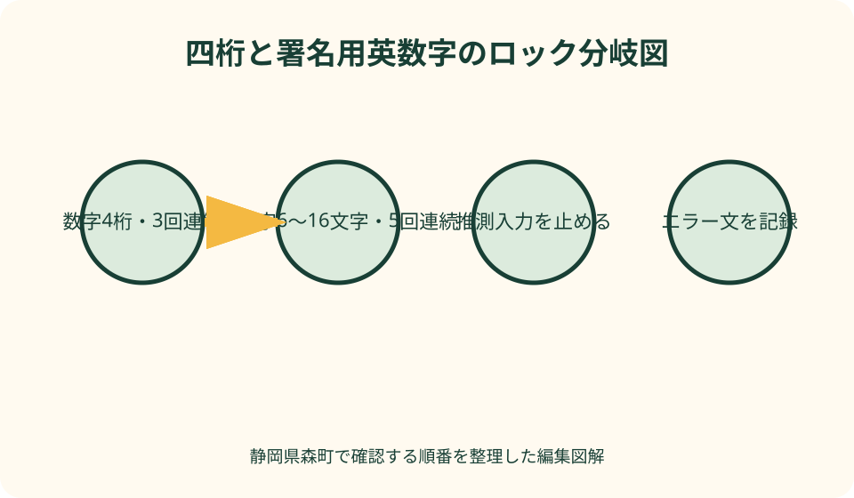
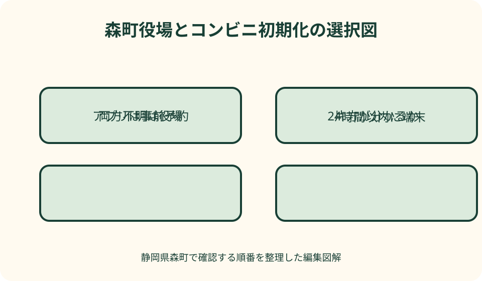

行政手続・証明書｜最終確認 2026-08-10
静岡県森町でマイナンバーカードの暗証番号を再設定する｜ロック回数と窓口・コンビニ手順
マイナンバーカードの暗証番号は一種類ではありません。数字四桁の暗証番号と、電子署名に使う英数字の暗証番号では、用途もロックまでの回数も異なります。さらに、忘れた状態、入力回数超過でロックした状態、覚えている番号を変更したい状態では入口が変わります。静岡県森町で役場へ行く場合と、条件を満たしてスマートフォンとコンビニを使う場合を分けて説明します。

編集イラスト最初に確認するのは何桁の暗証番号を求められたか
画面に『暗証番号が違います』と出たら、思い当たる数字を続けて入力する前に、どの機能を使っていたかを確認します。マイナンバーカードには複数の暗証番号が設定され、すべてが数字四桁ではありません。入力欄の桁数、サービス名、エラー文をメモすると、森町役場へ相談するときの手掛かりになります。
コンビニで住民票などを取得するときや、マイナポータルへログインするときに主に使うのは、利用者証明用電子証明書の数字四桁です。森町のコンビニ交付案内も、カード取得時に設定した四桁の暗証番号が必要だと説明しています。この番号を三回連続して誤るとロックされるため、二回間違えた時点で入力を止める判断が重要です。
e-Taxなどで電子署名を付ける場面では、署名用電子証明書の英数字6〜16文字を使います。数字四桁と同じ番号を入れる欄ではなく、アルファベットは大文字を用いるなど設定規則があります。署名用は五回連続で誤るとロックされるため、キーボードの大文字・数字切替も確認します。
ほかにも、住民基本台帳用や券面事項入力補助用として数字四桁を設定します。カード交付時に同じ四桁を共通設定した人もいれば、分けた人もいます。『四桁は一つだけだったはず』という記憶で断定せず、交付時の暗証番号設定等依頼書が残っていれば、番号そのものを人前へ出さず種類欄を確認します。
忘れた・ロックした・変更したいを分ける
暗証番号を思い出せない状態は『失念』、規定回数の誤入力で機能が止まった状態は『ロック』です。どちらも再設定の対象になりますが、まだロックしていないから何度でも試せるわけではありません。誤入力回数は端末やサービスをまたいでも引き継がれるため、別のコンビニや別のスマートフォンで試し直す解決法は選びません。
番号を覚えていて、漏えいが心配だから別の番号へ変えたい場合は『変更』です。現在の番号を入力できることが前提となる方法と、本人確認のうえで初期化する方法を混同しません。番号を忘れたのに変更画面で進めようとすると、残りの入力機会を失うことがあります。
暗証番号ではなく電子証明書の有効期限切れが原因で利用できないこともあります。この場合、番号だけ再設定してもサービスは戻りません。カード本体の期限、電子証明書の期限、氏名や住所を変更した時期も確認し、森町窓口へ『期限切れかロックか分からない』と伝えます。
カードのICチップが読み取れない、スマートフォンのNFC位置がずれている、コンビニ端末がメンテナンス中といった原因もあります。エラーが出た事実だけで暗証番号ロックと断定せず、表示された文言を撮影または書き留めます。ただし暗証番号が映る画面や入力中の手元を写真に残さないでください。
森町役場で再設定する方法が最も条件を分けやすい
暗証番号の種類が分からない、両方とも忘れた、電子証明書の期限も不明という場合は、住民登録のある森町役場での再設定が基本です。森町のコンビニ交付ページは、四桁を三回誤ってロックした場合、本人がカードを持って住民生活課へ来庁し再設定する必要があると案内しています。
本人来庁では、マイナンバーカードを必ず持参します。そのほかに必要な本人確認書類、申請書、受付方法は来庁日に森町へ確認してください。カードは手元にあるが暗証番号だけ分からない場合と、カード自体を紛失した場合では手続が異なります。紛失中なら先に機能停止と再交付の案内が必要です。
森町のカード交付案内では、通常の窓口時間と水曜の延長対応が示されています。水曜延長ページにはマイナンバーカード関連の対象業務が掲載されていますが、再設定を希望する日の受付締切や混雑は別に確認します。仕事帰りに終了間際へ着く場合は、処理できるか電話で尋ねてから向かいます。
再設定では、新しい番号をその場で本人が入力します。家族や職員へ番号を読み上げる必要はありません。設定後に紙へ控えるなら、カードと同じ財布へ入れず、個人番号の写しとも分けます。数字四桁は生年月日、住所、連続数字など推測されやすい組合せを避けます。

コンビニ初期化は片方の暗証番号が分かる人向け
公的個人認証サービスポータルでは、署名用または利用者証明用の一方を、スマートフォンと対応コンビニ端末で初期化・再設定できるサービスを案内しています。ただし、両方を同時に忘れた人が無条件で使える仕組みではありません。本人確認に、初期化しない側の暗証番号を使います。
署名用の英数字を初期化したい場合は、利用者証明用の数字四桁が必要です。反対に、利用者証明用の四桁を初期化したい場合は、署名用の英数字が必要です。どちらも分からない、残っている側もロックしている場合は、アプリで試行せず森町役場へ進みます。
利用には、対応するスマートフォン、顔写真付きマイナンバーカード、有効な電子証明書、JPKI暗証番号リセットアプリが必要です。氏名・住所など基本情報の変更後で署名用電子証明書が失効している場合や、電子証明書の期限が切れている場合は利用できないことがあります。アプリの対応機種も国の最新一覧で確認します。
スマートフォンで行うのは初期化の事前予約であり、予約だけでは新しい暗証番号へ変わりません。予約後24時間以内に、対応事業者のキオスク端末へカードを持参し、画面に沿って新しい番号を設定して完了します。予約期限を過ぎた場合は、端末で無理に進めず最初から予約し直します。
森町のコンビニ交付と暗証番号初期化は別サービス
森町が提供する証明書のコンビニ交付と、国の仕組みによる暗証番号初期化は、同じマルチコピー機を使うことがあっても目的が違います。コンビニ交付は証明書を発行するサービス、初期化は暗証番号を設定し直すサービスです。証明書交付画面で四桁を試し続けてロックを解除することはできません。
すべての店舗・端末が暗証番号初期化の両方式へ対応しているとは限りません。店舗ブランドだけで判断せず、公的個人認証サービスポータルの対象事業者一覧と、利用者証明用・署名用のどちらへ対応するかを確認します。森町内に対応端末が見つからない場合は、役場窓口を代案にします。
国の現行案内では、キオスク端末で初期化できる時間帯が示されていますが、店舗営業時間、機器点検、サービス停止は別です。深夜まで開く店舗でも対象メニューを常時使えるとは限りません。来店前に最新の提供時間とメンテナンス情報を確認し、予約の24時間期限に余裕を持たせます。
初期化を終えた直後に住民票を発行したい場合も、端末の案内に従います。暗証番号の再設定が完了しても、森町のコンビニ交付自体が休止中、電子証明書が期限切れ、転入・更新直後で反映待ちなら取得できません。証明書の提出期限が迫るときは森町役場窓口での交付も確認します。
良い点
暗証番号の種類を先に見分ける良い点は、残っている入力回数を不用意に減らさずに済むことです。コンビニ交付で求められた四桁と、e-Taxで求められた英数字を分ければ、別の番号を何度も試す行動を止められます。エラー画面を記録して窓口へ持参するだけでも相談が具体的になります。
役場窓口とコンビニ初期化という二つの経路があるため、条件が合う人は平日来庁を避けられます。片方の暗証番号が分かり、電子証明書が有効で、対応スマートフォンを使える人は、自分の時間に予約できます。一方、条件に合わない人は早く役場へ切り替えられます。
家族が支援するときも、暗証番号を共有せずに手伝えます。公式ページを開く、アプリが正規のものか確認する、対応店舗まで送迎する、森町役場の窓口時間を調べるといった支援は、番号そのものを知る必要がありません。本人が入力する範囲を守れます。
再設定をきっかけに、カードと暗証番号控えの保管方法を見直せます。カードと同じ財布に番号を書いた紙を入れない、家族チャットへ写真を送らない、用途名だけを別の場所に記録するなど、次に迷わない仕組みを作れます。便利さと秘密保持を両立する機会になります。
注文したい点
注文したいのは、『暗証番号』という一語で複数の番号が案内されるため、利用者には違いが見えにくい点です。四桁系だけでも利用者証明用、住民基本台帳用、券面事項入力補助用があります。画面に番号名と用途、残り試行回数が安全に分かる表示があれば、誤入力を減らしやすくなります。
コンビニ初期化は便利ですが、もう片方の暗証番号が分かること、電子証明書が有効であること、対応スマートフォンと端末があることなど条件が多くあります。『コンビニで直せる』だけが広まると、両方忘れた人が店舗で立ち往生します。入口で利用可否を判定できる簡潔な確認表が必要です。
森町公式のコンビニ交付ページには四桁ロック時の役場再設定が書かれていますが、署名用やコンビニ初期化を含む全体像は国のページへ移って確認する必要があります。町の専用窓口情報から国の初期化案内へ、暗証番号別のリンクがそろうと初めての人にも分かりやすくなります。
家族や支援者向けには、代理手続の可否と本人の秘密を守る方法がもう少し明示されると安心です。本人が来庁できない場合、委任状だけで済むと決めつけられません。照会書の郵送や本人確認など森町固有の条件を、来庁前に電話で確認できる案内が重要です。
本人が来庁できない場合は代理入力を前提にしない
暗証番号の再設定は秘密情報を扱うため、家族がカードを預かって窓口へ行けば必ず完了するものではありません。本人が来庁できない場合は、代理人申請の可否、照会書兼回答書の郵送、本人が記入・封かんする方法などを森町へ事前に確認します。一般の委任状を自作して持参するだけでは不足する可能性があります。
高齢の家族が番号を思い出せないとき、家族が候補を聞き出して端末へ入力し続けるのは避けます。本人が意味を理解して入力できるなら横で画面を読む支援にとどめ、難しければ役場へ事情を伝えます。認知機能や障害の状況により必要な配慮がある場合も、本人の暗証番号を共有する解決へ短絡しません。
15歳未満の子ども、成年被後見人など法定代理人が関与する場合は、カード名義人の年齢と代理関係を森町へ伝えます。署名用電子証明書が原則発行されない年齢層もあるため、子どものカードに大人と同じ番号構成があると思わないことが大切です。関係を示す書類の要否も確認します。
入院中や施設入所中で本人来庁が難しい場合、施設職員へ暗証番号を預けることを標準にしません。家族、法定代理人、施設職員のどの立場で申請を支援するかを明確にし、森町が指定する書類を使います。再設定後の控えも、本人または適切な管理者が保管します。

エラー別に次の行動を決める
『暗証番号が違います』と表示され、まだロックの明示がない場合は、入力を中止して番号の種類を確認します。四桁なら設定時の控え、英数字なら大文字入力と文字数を確認します。ただし控えが確実でなければ再入力せず、窓口または条件付きコンビニ初期化へ進みます。
『ロックされています』と表示された場合、時間がたてば自動解除されるとは考えません。利用者証明用や署名用のロックは、役場窓口で再設定するか、条件を満たす初期化サービスを使います。翌日に同じ番号を入れて確認する行為は、問題を解決しません。
『電子証明書が失効しています』『有効期限が切れています』という表示なら、暗証番号再設定より電子証明書の更新・再発行が先になることがあります。カードを持って森町役場へ相談し、氏名・住所変更の有無も伝えます。コンビニ初期化は有効な証明書を前提とするため利用できない場合があります。
『カードを読み取れません』なら、NFCの位置、スマートフォンケース、金属製の机、端末への置き方を確認します。読み取り失敗のたびに暗証番号が誤りとして数えられるとは限りませんが、原因が判別できないまま入力を繰り返しません。別の対応端末または森町窓口でICチップの状態を確認します。
再設定後にサービスごとに動作を確認する
新しい暗証番号を設定したら、どの番号を再設定したかを確認します。利用者証明用だけを直したのに、署名用を使うe-Taxが動くと期待してはいけません。窓口の受付票やアプリの完了画面で対象を確認し、番号自体ではなく『利用者証明用を再設定済み』という事実だけを記録します。
森町のコンビニ交付を試すときは、サービス提供時間と休止情報を町公式で確認します。再設定直後の動作確認を急ぐあまり、端末前で新番号を何度も入れないようにします。一度失敗したら表示を記録し、暗証番号誤りかサービス停止かを切り分けます。
マイナポータルでは利用者証明用、電子署名を伴う申請では署名用が必要になることがあります。ログイン成功と申請送信成功は別の確認です。重要な提出期限がある人は、再設定当日に初めて全操作を行わず、余裕のある時点で必要な画面まで試します。
健康保険証としての利用で読み取りに失敗した場合、暗証番号だけが原因とは限りません。顔認証、医療機関端末、資格情報、電子証明書の状態を分け、医療機関や保険者の案内に従います。受診を遅らせてまで暗証番号確認を優先しないでください。
代案・結論
対応スマートフォンがない、片方の暗証番号も分からない、対応店舗が近くにない場合は、コンビニ初期化へこだわらず森町役場を選びます。町なかから離れた地域に住む人は、出発前に持ち物、受付時間、代理人条件を電話で確認し、一度の来庁で対象番号を特定できるようエラー文を準備します。
役場の通常時間へ行けない場合は、水曜延長で暗証番号再設定を受けられるか確認します。延長窓口の対象業務や受付終了時刻は変わる可能性があるため、古い案内だけで向かいません。本人が難しい場合は代理方式を早めに相談し、照会書の郵送期間も予定に入れます。
住民票などが今日必要なのにコンビニ交付が使えない場合、暗証番号を急いで何度も試す代わりに、森町役場窓口での証明書請求を検討します。提出先が求める証明書の種類、窓口受付、本人確認書類を確認し、カード機能の復旧と書類の取得を別の課題として処理します。
結論として、画面が四桁か英数字か、失念かロックか、もう片方の番号が分かるかの三点で進路が決まります。両方不明なら森町役場、片方が確実で条件を満たすならアプリ予約と対応コンビニが候補です。推測入力を止めることが、最も早い再設定への第一歩です。
大石の視点
大石の視点では、暗証番号を家族全員で共有することを『備え』とは考えません。番号を知らなくても、カード交付時の書類を安全な場所にまとめる、森町の窓口時間を調べる、本人を送迎する、エラー文を記録するという支援はできます。秘密を広げない支援の方が長く続きます。
森町では役場までの距離が世帯によって違うため、二回の誤入力で立ち止まる価値があります。三回目でロックしてから遠距離を来庁するより、残り回数がある段階で控えを確認し、不明なら問い合わせる方が負担を抑えられます。端末前の数分と役場への往復を同じ重さで考えません。
コンビニ初期化は便利な選択肢ですが、デジタル操作が得意な人だけを正解にする必要はありません。アプリの顔認証やNFC読取りで止まったら、本人の能力不足と捉えず窓口へ切り替えます。公式に用意された二つの経路を、自分の状況に合わせて選ぶことが実用的です。
再設定後の記録は、新しい番号そのものではなく、設定日、番号の種類、次に確認する電子証明書の期限を残します。家族へは『四桁を再設定済み、コンビニ交付は確認待ち』まで共有すれば十分です。必要以上の情報を持たないことも、地域で安心してカードを使う設計です。
森町役場へ行く前の持ち物確認
第一の持ち物は、暗証番号を再設定する本人のマイナンバーカードです。カードを紛失している、破損している、期限切れである場合は同じ手続では進みません。電話では『カードは手元にあり券面期限内』『四桁を三回誤った』のように状態を伝えます。
第二に、町から指定された本人確認書類を準備します。必要な種類や点数は本人来庁か代理かで異なる可能性があるため、一般サイトの持ち物一覧をそのまま使いません。財布の紛失などで他の書類もない場合は、残っている書類名を伝えて森町の指示を受けます。
第三に、エラーが出たサービス名と日時をメモします。コンビニ交付、マイナポータル、e-Tax、医療機関など、どこで何桁を求められたかを書きます。暗証番号をメモへ書く必要はありません。職員へ伝えるのは番号ではなく、番号の種類と失念・ロックの状態です。
第四に、再設定後に必要なサービスの期限を整理します。当日中に証明書が必要、申告期限が近い、医療機関を受診するなどの事情を伝えれば、カード機能の復旧とは別の代替手段を検討できます。すべてを暗証番号再設定だけで解決しようとしません。
安全に保管するための再発防止チェック
新しい番号を決めるときは、住所番地、生年月日、電話番号の末尾、同じ数字の並びを避けます。署名用英数字は大文字と数字の見間違いにも注意し、自分だけが分かる規則で設定します。複数の番号を同じにできる場面でも、用途とリスクを理解して選びます。
控えを紙で残す場合、カードと同じ財布やカードケースへ入れません。『マイナンバー暗証番号』と外から分かる封筒も避け、本人が必要なときに取り出せる別の保管場所を決めます。処分するときは、そのまま家庭ごみへ出さず判読できないようにします。
デジタルで保管する場合、平文のメモ、写真アプリ、家族グループの会話へ置かないようにします。パスワード管理の方法を使うとしても、本人が復旧方法を理解できることが前提です。便利なアプリを導入して、今度はアプリの解除番号を家族全員へ渡す状態にしないでください。
最後に、カードを使うサービスと番号の種類だけを一覧にします。『コンビニ交付とマイナポータルは利用者証明用』『e-Tax署名は署名用』という対応を知っていれば、次回の入力欄で立ち止まれます。番号を覚えるより、間違えたときに試し続けない仕組みが再発防止になります。
公式情報・確認先
掲載内容は次の一次情報を基礎に整理しました。営業、料金、催し、交通は変わるため、出発前または手続き前にリンク先で最新情報を確認してください。
- 証明書のコンビニ交付サービスについて（静岡県森町、2026-08-10確認）
- マイナンバーカード交付までの手続き（静岡県森町、2026-08-10確認）
- 水曜日の窓口業務時間延長（静岡県森町、2026-08-10確認）
- マイナンバーカードのパスワードをコンビニで初期化（公的個人認証サービス ポータルサイト、2026-08-10確認）
- パスワードの失念（公的個人認証サービス ポータルサイト、2026-08-10確認）
- 利用者証明用電子証明書の暗証番号とは何ですか（地方公共団体情報システム機構（マイナンバーカード総合サイト）、2026-08-10確認）